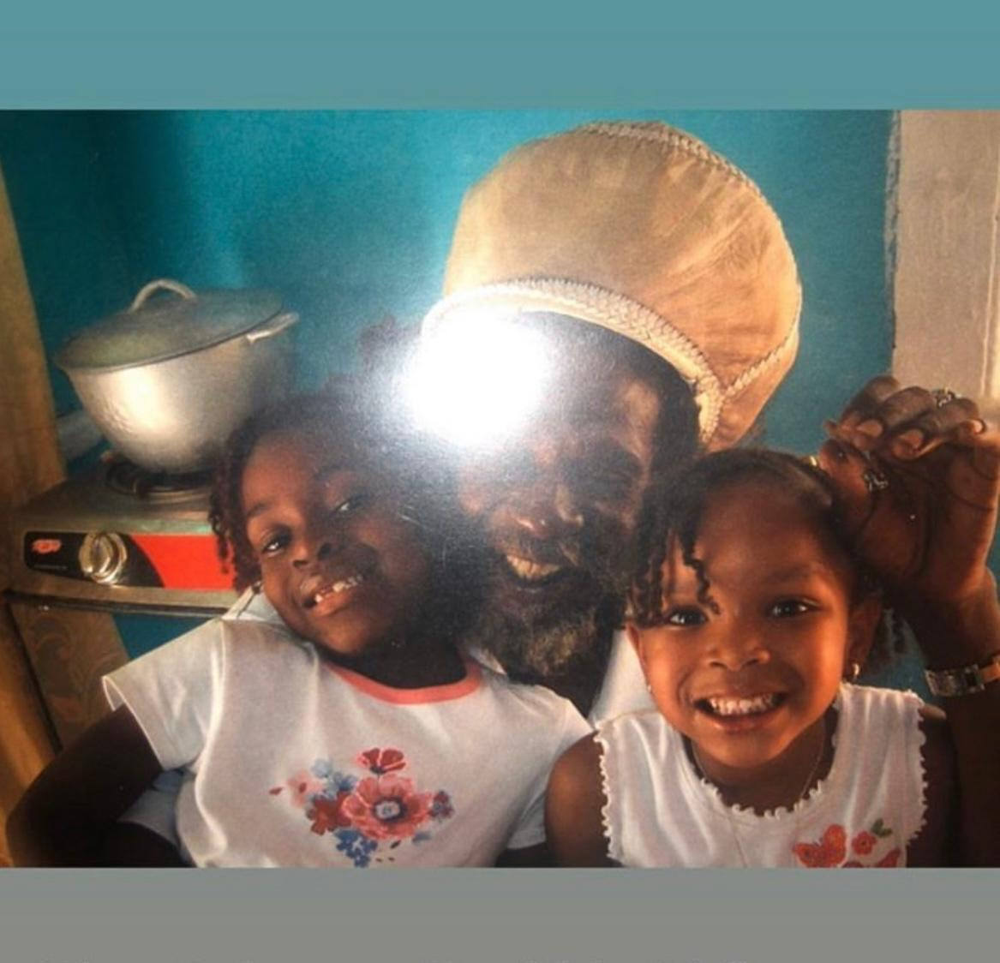

Take a seat.
We’re here
to listen.
Not designed to sell products. Built to grow a knowledge tree that fosters health, wellness, awareness, and opportunity
Let’s go through this together. No rush. No pressure. No lectures. Just clarity — at your pace, in your own time.
mdash; empowering people with genuine strength and confidence through education alone.Who We Are
A family
health community.
Not a platform that tells you what to do. A community that helps you understand what is happening — so you can lead your own health journey with confidence.
We are not here to tell you what to do. We are here to help you understand what is happening. There is a difference — and it matters enormously.
We believe people should understand their bodies, food, and health before being asked to follow weight-loss programmes, buy weight-loss products, or make major lifestyle changes. Understanding first. Everything else after.
Kwik Fat Cut functions as a family health community focused on learning, understanding, and building sustainable health habits — without pressure, body shaming, or quick-fix thinking. This is a space to grow, not a race to finish.
At Kwik Fat Cut, education always comes first. We listen rather than lecture. We take action — you guide. We prioritise prevention before intervention. We row. You steer.
A Core Belief
Our Mission
Education
before intervention.
Our mission is to provide education that helps people make informed, accurate decisions about their health, nutrition, and lifestyle. We focus on understanding first — so individuals can make changes with confidence, not confusion. Food is more than just fuel. It is information for the body.
Essential Nutrients
The body needs more than 20 essential vitamins and minerals regularly. When diets are high in calories but low in nutrients, people can be overweight yet undernourished at the cellular level.
The Gut Microbiome
Trillions of bacteria aid digestion, immune function, vitamin production, and mental health. The microbiome is shaped by diet — especially fibre, plant foods, and natural whole foods.
Inflammation & Disease
Poor diet fuels chronic inflammation, which underpins heart disease, diabetes, obesity, arthritis, and some cancers. Diet can increase or reduce inflammation. The choice is yours.
Prevention Over Intervention
Understanding your body before a problem arises is more powerful than treating one after. Education is the most effective form of intervention we know.
The Bigger Picture
So, where did
modern diets go wrong?
Traditional and indigenous diets — Jamaican, West Indian, African — were built around natural, whole foods: healthy fats, fibre-rich vegetables, legumes, fruits, and ground provisions. No refined sugar. No heavily processed ingredients. Recipes passed through generations, grounded in what the body actually needs. Then something shifted.
The shift to processed food
Modern diets have moved heavily toward processed, packaged, refined, and convenience foods. Frequent consumption has been linked to lower intake of essential vitamins, minerals, and fibre.
Hidden sugars & metabolic damage
Many modern foods contain hidden sugars and refined carbs causing rapid blood sugar spikes. Over time this can damage the metabolic system and is linked to obesity, type 2 diabetes, and fatty liver disease.
Engineered to overconsume
Highly processed foods combine sugar, salt, and fat to stimulate the brain’s reward system — making it natural to eat more than the body needs. This is design, not weakness.
Environmental & economic pressure
Pollution, soil erosion, and climate change affect food at the source. Systems that favour cheap, processed foods spread additives at scale — prioritising profit over nourishment.
Rooted In
Kingston, Jamaica
Where Kwik Fat Cut was planted, and where it still grows from.
Kingston, Jamaica
Get Directions“Many people today are eating more food — but getting less nutrition. This is why education comes first.”

“Healthy communities begin at home.”
Honey Ras family tree — Kingston, Jamaica 🇯🇲❤️💚
Kwik Fat Cut
culinary peace.We row. You steer.
Ready to understand what you eat?
Start free. No subscription. No pressure. No body shaming.